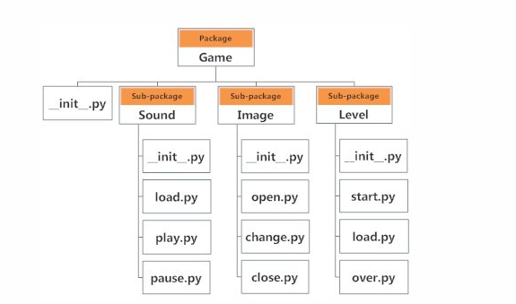
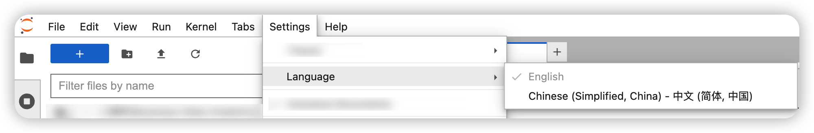
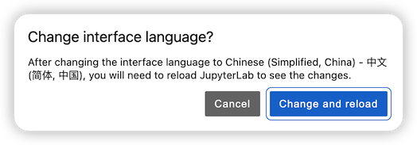

模块和包#
一、模块#
在Python中，**模块（module）**是指一个包含了 Python 代码的文件。模块可以包含函数、变量和类等定义，以及可执行的代码。
模块的主要目的是将相关的代码组织在一起，以便在需要时进行重复使用。通过将代码分解为模块，可以提高代码的可维护性、可读性和重用性。
要创建一个模块，只需创建一个以.py为扩展名的Python脚本文件，并在其中编写相应的代码。
1.1 import 模块名#
当您使用import语句加载模块时，可以直接指定模块的名称，例如：
import module_name
这将加载名为module_name的模块，并使其在当前代码中可用。您可以使用模块中定义的函数、变量和类等。
我们以datetime模块为例，datetime模块，提供当日的日期，试运行以下代码：
import datetime
now = datetime.datetime.today()
print(now)
2023-09-17 18:21:48.763584
1.2 from 模块名 import 函数名#
此外，还可以使用from关键字结合import语句来选择性地加载模块或包中的特定内容。例如：
from module_name import function_name
这将从module_name模块中加载function_name函数，并使其在当前代码中可用。
例如，
from math import sqrt
sqrt(2)
1.4142135623730951
练习#
在当前目录下，点击右上方蓝色➕号，新建一个Python文件
在文件中放入上一练习的函数compare(x, y)，保存文件名称为my_func.py
在下方空格处，导入该文件中的compare函数
调用compare函数，比较2的3次方和3的2次方的大小。
二、包#
2.1 包的概念#
**Package（包）**是一个包含多个模块的目录。包用于组织和管理相关的模块，可以形成层次结构。包目录中通常包含一个特殊的__init__.py文件，用于标识该目录为一个包。
例如，您可以创建一个名为my_package的包，其中包含多个模块文件:
my_package/
__init__.py
module1.py
module2.py
可以通过导入包和其中的模块来使用其中的功能：
import my_package.module1
import my_package.module2
my_package.module1.function1()
my_package.module2.function2()
Python中的import语句既可以用于加载模块（module），也可以用于加载包（package）。您也可以从包中加载特定的模块或其他内容。例如：
from package_name import module1
这将从package_name包中加载module1模块，并使其在当前代码中可用。
2.2 包的结构#
以下图为例子，这是一个和游戏相关的程序，它的文件结构如下：

这里Game文件夹叫包（Package），Sound、Image和Level这三个文件夹叫子包(Sub-package)。它们各自包含自己的.py文件，这些文件叫模块。
从这里我们可以看到，包是一个有层次的文件目录结构，它定义了由n个模块或n个子包组成的python应用程序执行环境。通俗一点：包是一个包含__init__.py 文件的目录，该目录下一定得有这个__init__.py文件和其它模块或子包。
注意，每一个包中的__init__.py文件是必须存在的，否则，Python就会把这个目录当成普通目录(文件夹)，而不是一个包。__init__.py可以是空文件，也可以有Python代码，因为__init__.py本身就是一个模块，而它的模块名就是对应包的名字。
2.3 Python的标准库#
Python的标准库是一组预先安装在Python解释器中的模块和包，它们提供了广泛的功能和工具，可用于各种常见的任务和应用程序开发。
Python的标准库既包含模块，也包含包。标准库中的一些功能是通过单个模块提供的，例如math模块用于数学计算，random模块用于生成随机数，datetime模块用于处理日期和时间等。您可以使用import语句来加载这些模块，并在您的代码中使用它们提供的功能。
另一方面，标准库中的一些功能是通过包的形式组织的。包是一个包含多个模块的目录，通常还包括一个特殊的__init__.py文件来标识该目录为一个包。这些包提供了一组相关的模块，用于解决特定的问题或提供特定的功能。例如，os包提供了与操作系统交互的功能，re包提供了正则表达式操作的功能。您可以使用import语句加载这些包，并使用包中的模块和功能。
这里只列举了部分，更多请见官方文档: 链接
模块或包 |
功能 |
|---|---|
提供了许多与操作系统交互的函数 |
|
模块提供了以简单和复杂的方式操作日期和时间的类 |
|
为高级字符串处理提供正则表达式工具 |
|
模块提供了进行随机选择的工具 |
|
用于扫描模块并验证程序文档字符串中嵌入的测试 |
2.4 Python的第三方包#
Python的第三方包是由Python社区开发并提供的，不属于Python标准库的软件包。这些包通常由第三方开发者创建和维护，并提供了各种额外的功能和工具，可以扩展Python的能力。
第三方包可以用于各种用途，例如数据处理、网络通信、Web开发、科学计算、机器学习、图像处理等。它们提供了高级功能和库，使开发人员能够更快速、更高效地开发应用程序。
Python的第三方包可以通过包管理工具（如pip）进行安装。安装这些包后，您可以在自己的Python项目中使用它们。常见的第三方包有：
Python的第三方包 |
功能 |
|---|---|
|
提供了数组、矩阵和数值计算功能 |
|
提供了强大、便捷的数据分析工具 |
|
用于绘制图表和可视化数据的库 |
|
提供了科学计算、统计等相关工具 |
|
提供了多元回归和分析的工具 |
|
用于发送HTTP请求的库 |
|
用于构建Web应用程序的高级框架 |
|
用于构建轻量级Web应用程序的框架 |
|
用于机器学习和深度学习的库 |
|
提供了各种机器学习算法和工具 |
|
用于解析和提取HTML/XML数据的库 |
这只是一小部分常见的第三方包示例，Python社区有数以千计的第三方包可供选择，覆盖了各种不同的领域和用途。
通过使用第三方包，您可以利用Python生态系统中其他开发者的工作成果，加快开发速度，避免重复造轮子，并且能够更加便捷地实现复杂的功能。
2.5 pip包管理器#
在Python中，pip是一个用于管理和安装第三方包的包管理工具。它是Python Package Index（PyPI）的默认包管理器。
使用pip，您可以轻松地搜索、安装、升级和卸载Python包。
以下是一些常用的pip命令示例，在shell命令行环境下，输入
安装包：
pip install package_name
该命令会从PyPI下载并安装指定的包。
如果网速比较慢，可以打断以上命令，使用ctrl+c。然后指定pypi镜像地址：https://mirrors.aliyun.com/pypi/simple，输入命令如下：
pip install package_name -i 镜像地址
镜像地址可选：
阿里云 https://mirrors.aliyun.com/pypi/simple/
中国科技大学 https://pypi.mirrors.ustc.edu.cn/simple/
豆瓣(douban) https://pypi.douban.com/simple/
清华大学 https://pypi.tuna.tsinghua.edu.cn/simple/
中国科学技术大学 https://pypi.mirrors.ustc.edu.cn/simple/
可以把某个源设为默认，例如把清华源设为默认：
pip config set global.index-url https://pypi.tuna.tsinghua.edu.cn/simple
升级包：
pip install --upgrade package_name
该命令会升级已安装的包到最新版本。
卸载包：
pip uninstall package_name
该命令会卸载指定的包。
列出已安装的包：
pip list
该命令会列出当前环境中已安装的所有包。
pip还支持其他一些命令和选项，您可以使用pip --help命令或查阅pip的文档来获取更多信息。
需要注意的是，pip默认安装包到Python的全局环境中，如果你想安装到本用户下，在命令中追加使用’-u’参数。如果您使用虚拟环境（virtual environment），您可以在虚拟环境中使用pip来管理包，以避免与全局环境中的包冲突。
练习#
在当前目录下，点击右上方蓝色➕号，打开’Terminal’(终端)
在’Terminal’的命令行界面里，输入命令
pip config set global.index-url https://pypi.tuna.tsinghua.edu.cn/simple
在’Terminal’的命令行界面里，输入命令
pip install jupyterlab-language-pack-zh-CN
点击settings，点击language，选择中文简体

然后，页面提示，点击change and reload
{kind=link}
观察，页面是否发生了变化？